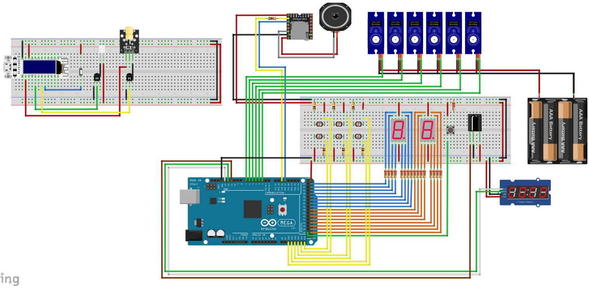

Ons spel heet GhostBlaster, hierbij is het de bedoeling dat er aan de hand van een geweer, uitgerust met een laser, op verschillende doelwitten schiet. Zo moet je binnen de tijd zoveel mogelijk doelwitten raken om zo een zo hoog mogelijke score te behalen. Er is een display waarop het aantal beschikbare kogels wordt getoond, maar wanneer deze op zijn moet er herladen worden.
Hoofd onderdelen
Laser
De laser is een van de belangrijkste onderdelen van het spel. Hiermee kun je de doelwitten raken en punten scoren.
LDR sensor
De LDR sensor word gebruikt om het signaal van de laser te ontvangen.
Servo Motor
Aan de servo motoren zijn de doelwitten bevestigd, waarop dan weer de LDR sensoren zijn bevestigd. Hierdoor zit er beweging in het spel.
Trigger

De trigger word gebruikt om de laser te laten branden en ervoor te zorgen dat er doelwitten geraakt kunnen worden.
Wifi Kit 8

De wifi kit is het hart van ons laser geweer. Hier zijn alle onderdelen van het geweer op aangesloten en is er ook een display ingebouwd die het aantal resterend kogels toont.
Arduino MEGA
De Arduino MEGA zorgt voor de centrale sturing van ons spel. Hier worden alle LDR sensoren en servo's op aangesloten, maar ook de puntentelling wordt hiermee berekend en getoont op een 7 Segment Display
7-Segment Display

In onze opstelling zijn er meerdere 7-segment displays. Deze worden gebruikt voor de resterende tijd te tonen, maar ook om de punten weer te geven.
Flow Chart
Hieronder staat de flowchart die onze code duidelijker afbeeld

Hardware blokschema
Hieronder staat het blokschema van alle hardware componenten

Fritzing
Hieronder staat het elektronische Fritzing schema
Code
Hieronder kan u de verschillende delen code terug vinden van ons project in de verschillende menu's.
Link naar de GitHub Repository
#include <TM1637Display.h>
#include "IRremote.h"
#include "Arduino.h"
#include "DFRobotDFPlayerMini.h"
#include "ghost.hpp"
// IR variables
int receiverPin = 11;
IRrecv irrecv(receiverPin);
decode_results results;
// Create instance of mp3 player
DFRobotDFPlayerMini DFPlayer;
#define CLK 9
#define DIO 8
#define timer 1000
#define alarm 7
TM1637Display display(CLK, DIO);
uint8_t data[] = {0, 0, 0, 0};
unsigned long currentMillis = 0;
unsigned long previousMillis = 0;
unsigned long timertijd = 0;
int tm = 0;
#define seg11 22
#define seg12 23
#define seg13 24
#define seg14 25
#define seg15 26
#define seg16 27
#define seg17 28
#define seg21 30
#define seg22 31
#define seg23 32
#define seg24 33
#define seg25 34
#define seg26 35
#define seg27 36
int totalescore = 0;
int tiental = 0;
int eenheid = 0;
#define startKnop 53
short StartknopStatus = 0;
void setup() {
Serial.begin(9600);
pinMode(startKnop, INPUT);
pinMode(seg11, OUTPUT); pinMode(seg12, OUTPUT); pinMode(seg13, OUTPUT); pinMode(seg14, OUTPUT); pinMode(seg15, OUTPUT); pinMode(seg16, OUTPUT); pinMode(seg17, OUTPUT);
pinMode(seg21, OUTPUT); pinMode(seg22, OUTPUT); pinMode(seg23, OUTPUT); pinMode(seg24, OUTPUT); pinMode(seg25, OUTPUT); pinMode(seg26, OUTPUT); pinMode(seg27, OUTPUT);
digitalWrite(seg21, HIGH); digitalWrite(seg22, HIGH); digitalWrite(seg23, HIGH); digitalWrite(seg24, HIGH); digitalWrite(seg25, HIGH); digitalWrite(seg26, HIGH); digitalWrite(seg27, HIGH);
digitalWrite(seg11, HIGH); digitalWrite(seg12, HIGH); digitalWrite(seg13, HIGH); digitalWrite(seg14, HIGH); digitalWrite(seg15, HIGH); digitalWrite(seg16, HIGH); digitalWrite(seg17, HIGH);
display.setBrightness(0x0f);
data[3] = display.encodeDigit(0);
data[2] = display.encodeDigit(0);
data[1] = display.encodeDigit(0);
data[0] = display.encodeDigit(0);
display.setSegments(data);
wachten();
irrecv.enableIRIn();
Serial2.begin(9600);
if (!DFPlayer.begin(Serial2)) {
Serial.println(F("Unable to begin:"));
Serial.println(F("1.Please recheck the connection!"));
Serial.println(F("2.Please insert the SD card!"));
while (true);
}
Serial.println(F("DFPlayer Mini online."));
DFPlayer.volume(30); // Volume (0-30)
DFPlayer.play(2); // play second mp3, to test (coin)
}
void loop() {
// Prepare score display
digitalWrite(seg21, HIGH); digitalWrite(seg22, HIGH); digitalWrite(seg23, HIGH); digitalWrite(seg24, HIGH); digitalWrite(seg25, HIGH); digitalWrite(seg26, HIGH); digitalWrite(seg27, HIGH);
digitalWrite(seg11, HIGH); digitalWrite(seg12, HIGH); digitalWrite(seg13, HIGH); digitalWrite(seg14, HIGH); digitalWrite(seg15, HIGH); digitalWrite(seg16, HIGH); digitalWrite(seg17, HIGH);
// Prepare time display
display.setBrightness(0x0f);
data[3] = display.encodeDigit(0);
data[2] = display.encodeDigit(0);
data[1] = display.encodeDigit(0);
data[0] = display.encodeDigit(0);
display.setSegments(data);
wachten(); // Display a waiting pattern
totalescore = 0; // Zero the score
StartknopStatus = digitalRead(startKnop);
// If the startbutton is pressed
if(StartknopStatus == HIGH){
// Clear score display
digitalWrite(seg21, HIGH); digitalWrite(seg22, LOW); digitalWrite(seg23, LOW); digitalWrite(seg24, LOW); digitalWrite(seg25, LOW); digitalWrite(seg26, LOW); digitalWrite(seg27, LOW);
digitalWrite(seg11, HIGH); digitalWrite(seg12, LOW); digitalWrite(seg13, LOW); digitalWrite(seg14, LOW); digitalWrite(seg15, LOW); digitalWrite(seg16, LOW); digitalWrite(seg17, LOW);
klokstart(); // Do countdown
timertijd = 101; // Set time
// While the game is going on
while (timertijd > 0) {
// CHeck for IR from gun
if (irrecv.decode(&results)) { // recieved signal?
DFPlayer.play(1); // Play first mp3 (shot)
irrecv.resume(); // Wait for next
}
// Loop over all possible ldrs
for (int i = A10; i < A15; i++){
if (hit(i))
totalescore++; // Increase score if hit
}
// Every second change the state from up to down or vice versa
unsigned long ghostCurrentMillis = millis();
if (ghostCurrentMillis - ghostPreviousMillis >= choiceInterval) {
ghostPreviousMillis = ghostCurrentMillis;
int ghostId = random(0,6);
if(ghostStatus[ghostId] == false){
ghostUp(ghostId);
}
else{
ghostDown(ghostId);
}
}
score(); // Display score
klok(); // Advance and display clock
if (totalescore > 99) // handle score overflow
totalescore = 0;
}
}
}
void klokstart(){
int countDown = 5;
while (countDown != 0){
display.setBrightness(0x0f);
data[3] = display.encodeDigit(countDown);
data[2] = display.encodeDigit(countDown);
data[1] = display.encodeDigit(countDown);
data[0] = display.encodeDigit(countDown);
display.setSegments(data);
countDown--;
delay(1000);
}
}
void klok () {
currentMillis = millis();
if ((currentMillis - previousMillis) >= 1000) {
if (timertijd > 0) {
timertijd--;
}
display.setBrightness(0x0f);
data[3] = display.encodeDigit(timertijd / 1 % 10);
data[2] = display.encodeDigit(timertijd % 60 / 10);
data[1] = display.encodeDigit(timertijd / 60 % 10);
data[0] = display.encodeDigit(timertijd / 60 / 10);
display.setSegments(data);
previousMillis = currentMillis;
}
}
void score(){
eenheid = totalescore % 10;
tiental = totalescore / 10;
if(eenheid == 0){
digitalWrite(seg21, HIGH); digitalWrite(seg22, LOW); digitalWrite(seg23, LOW); digitalWrite(seg24, LOW); digitalWrite(seg25, LOW); digitalWrite(seg26, LOW); digitalWrite(seg27, LOW);
}else if(eenheid == 1){
digitalWrite(seg21, HIGH); digitalWrite(seg22, HIGH); digitalWrite(seg23, HIGH); digitalWrite(seg24, LOW); digitalWrite(seg25, HIGH); digitalWrite(seg26, HIGH); digitalWrite(seg27, LOW);
}else if(eenheid == 2){
digitalWrite(seg21, LOW); digitalWrite(seg22, HIGH); digitalWrite(seg23, LOW); digitalWrite(seg24, LOW); digitalWrite(seg25, LOW); digitalWrite(seg26, LOW); digitalWrite(seg27, HIGH);
}else if(eenheid == 3){
digitalWrite(seg21, LOW); digitalWrite(seg22, HIGH); digitalWrite(seg23, LOW); digitalWrite(seg24, LOW); digitalWrite(seg25, HIGH); digitalWrite(seg26, LOW); digitalWrite(seg27, LOW);
}else if(eenheid == 4){
digitalWrite(seg21, LOW); digitalWrite(seg22, LOW); digitalWrite(seg23, HIGH); digitalWrite(seg24, LOW); digitalWrite(seg25, HIGH); digitalWrite(seg26, HIGH); digitalWrite(seg27, LOW);
}else if(eenheid == 5){
digitalWrite(seg21, LOW); digitalWrite(seg22, LOW); digitalWrite(seg23, LOW); digitalWrite(seg24, HIGH); digitalWrite(seg25, HIGH); digitalWrite(seg26, LOW); digitalWrite(seg27, LOW);
}else if(eenheid == 6){
digitalWrite(seg21, LOW); digitalWrite(seg22, LOW); digitalWrite(seg23, LOW); digitalWrite(seg24, HIGH); digitalWrite(seg25, LOW); digitalWrite(seg26, LOW); digitalWrite(seg27, LOW);
}else if(eenheid == 7){
digitalWrite(seg21, HIGH); digitalWrite(seg22, HIGH); digitalWrite(seg23, LOW); digitalWrite(seg24, LOW); digitalWrite(seg25, HIGH); digitalWrite(seg26, HIGH); digitalWrite(seg27, LOW);
}else if(eenheid == 8){
digitalWrite(seg21, LOW); digitalWrite(seg22, LOW); digitalWrite(seg23, LOW); digitalWrite(seg24, LOW); digitalWrite(seg25, LOW); digitalWrite(seg26, LOW); digitalWrite(seg27, LOW);
}else if(eenheid == 9){
digitalWrite(seg21, LOW); digitalWrite(seg22, LOW); digitalWrite(seg23, LOW); digitalWrite(seg24, LOW); digitalWrite(seg25, HIGH); digitalWrite(seg26, LOW); digitalWrite(seg27, LOW);
}else{
digitalWrite(seg21, HIGH); digitalWrite(seg22, LOW); digitalWrite(seg23, LOW); digitalWrite(seg24, LOW); digitalWrite(seg25, LOW); digitalWrite(seg26, LOW); digitalWrite(seg27, LOW);
}
if(tiental == 0){
digitalWrite(seg11, HIGH); digitalWrite(seg12, LOW); digitalWrite(seg13, LOW); digitalWrite(seg14, LOW); digitalWrite(seg15, LOW); digitalWrite(seg16, LOW); digitalWrite(seg17, LOW);
}else if(tiental == 1){
digitalWrite(seg11, HIGH); digitalWrite(seg12, HIGH); digitalWrite(seg13, HIGH); digitalWrite(seg14, LOW); digitalWrite(seg15, HIGH); digitalWrite(seg16, HIGH); digitalWrite(seg17, LOW);
}else if(tiental == 2){
digitalWrite(seg11, LOW); digitalWrite(seg12, HIGH); digitalWrite(seg13, LOW); digitalWrite(seg14, LOW); digitalWrite(seg15, LOW); digitalWrite(seg16, LOW); digitalWrite(seg17, HIGH);
}else if(tiental == 3){
digitalWrite(seg11, LOW); digitalWrite(seg12, HIGH); digitalWrite(seg13, LOW); digitalWrite(seg14, LOW); digitalWrite(seg15, HIGH); digitalWrite(seg16, LOW); digitalWrite(seg17, LOW);
}else if(tiental == 4){
digitalWrite(seg11, LOW); digitalWrite(seg12, LOW); digitalWrite(seg13, HIGH); digitalWrite(seg14, LOW); digitalWrite(seg15, HIGH); digitalWrite(seg16, HIGH); digitalWrite(seg17, LOW);
}else if(tiental == 5){
digitalWrite(seg11, LOW); digitalWrite(seg12, LOW); digitalWrite(seg13, LOW); digitalWrite(seg14, HIGH); digitalWrite(seg15, HIGH); digitalWrite(seg16, LOW); digitalWrite(seg17, LOW);
}else if(tiental == 6){
digitalWrite(seg11, LOW); digitalWrite(seg12, LOW); digitalWrite(seg13, LOW); digitalWrite(seg14, HIGH); digitalWrite(seg15, LOW); digitalWrite(seg16, LOW); digitalWrite(seg17, LOW);
}else if(tiental == 7){
digitalWrite(seg11, HIGH); digitalWrite(seg12, HIGH); digitalWrite(seg13, LOW); digitalWrite(seg14, LOW); digitalWrite(seg15, HIGH); digitalWrite(seg16, HIGH); digitalWrite(seg17, LOW);
}else if(tiental == 8){
digitalWrite(seg11, LOW); digitalWrite(seg12, LOW); digitalWrite(seg13, LOW); digitalWrite(seg14, LOW); digitalWrite(seg15, LOW); digitalWrite(seg16, LOW); digitalWrite(seg17, LOW);
}else if(tiental == 9){
digitalWrite(seg11, LOW); digitalWrite(seg12, LOW); digitalWrite(seg13, LOW); digitalWrite(seg14, LOW); digitalWrite(seg15, HIGH); digitalWrite(seg16, LOW); digitalWrite(seg17, LOW);
}else{
digitalWrite(seg11, HIGH); digitalWrite(seg12, LOW); digitalWrite(seg13, LOW); digitalWrite(seg14, LOW); digitalWrite(seg15, LOW); digitalWrite(seg16, LOW); digitalWrite(seg17, LOW);
}
}
void wachten(){
int dealay = 120;
digitalWrite(seg23, HIGH); digitalWrite(seg24, HIGH);
digitalWrite(seg23, LOW); digitalWrite(seg13, LOW);
delay(dealay);
digitalWrite(seg23, HIGH); digitalWrite(seg13, HIGH);
digitalWrite(seg12, LOW); digitalWrite(seg13, LOW);
delay(dealay);
digitalWrite(seg12, HIGH); digitalWrite(seg13, HIGH);
digitalWrite(seg15, LOW); digitalWrite(seg12, LOW);
delay(dealay);
digitalWrite(seg15, HIGH); digitalWrite(seg12, HIGH);
digitalWrite(seg16, LOW); digitalWrite(seg15, LOW);
delay(dealay);
digitalWrite(seg16, HIGH); digitalWrite(seg15, HIGH);
digitalWrite(seg26, LOW); digitalWrite(seg16, LOW);
delay(dealay);
digitalWrite(seg26, HIGH); digitalWrite(seg16, HIGH);
digitalWrite(seg27, LOW); digitalWrite(seg26, LOW);
delay(dealay);
digitalWrite(seg27, HIGH); digitalWrite(seg26, HIGH);
digitalWrite(seg24, LOW); digitalWrite(seg27, LOW);
delay(dealay);
digitalWrite(seg24, HIGH); digitalWrite(seg27, HIGH);
digitalWrite(seg23, LOW); digitalWrite(seg24, LOW);
delay(dealay);
}
#include "Arduino.h"
#include "HardwareSerial.h"
#include <Servo.h>
#define baseLightLevel 500
#define up 100
#define down 0
#define choiceInterval 1000
bool hit(uint8_t pin);
void ghostDown(uint8_t ghostPin);
void setGhostState(int ghost);
Servo servo;
unsigned long ghostCurrentMillis = 0;
unsigned long ghostPreviousMillis = 0;
unsigned long currentShotMilis = 0;
unsigned long previousShotMilis = 0;
int ghostPin[] = {PB4, PB2, PB3, PB5, PB6};
int ghostVisible[] = {0, 100, 150, 0, 100};
int ghostInvisible[] = {100, 10, 50, 80, 0};
bool ghostStatus[] = {false, false, false, false, false}; //true = up, false = down
int ghostShown = 0;
bool hit(uint8_t pin){
int ghostId = ghostPin[pin-65];
Serial.println(ghostId);
if (analogRead(pin) > baseLightLevel){
currentShotMilis = millis();
if (currentShotMilis - previousShotMilis > 500){
Serial.print(ghostId); Serial.println("BIEM");
ghostDown(ghostId);
previousShotMilis = currentShotMilis;
return true;
}
}
return false;
}
void ghostDown(uint8_t ghostId){
servo.attach(ghostPin[ghostId]);
servo.write(ghostInvisible[ghostId]);
ghostStatus[ghostId] = false;
}
void ghostUp(uint8_t ghostId){
servo.attach(ghostPin[ghostId]);
servo.write(ghostVisible[ghostId]);
ghostStatus[ghostId] = true;
}
/* =========== CONNECTING ESP8266 ===========
driver for connecting on windows: https://www.silabs.com/documents/public/software/CP210x_Windows_Drivers.zip
IDE: file menu > preference > Additional Board Manager: http://arduino.esp8266.com/stable/package_esp8266com_index.json
IDE: board manager > download ESP8266
IDE: tools > board manager > ESP8266 > NodeMCU 1.0 (ESP-12E Module)
=== connecting IR LED ===
gebaseerd op de IRsendDemo van de IRremoteesp8266 library
schema komt van: https://github.com/crankyoldgit/IRremoteESP8266/wiki#ir-receiving
*/
#include <U8g2lib.h> // WifiKit8 display
#include <IRremoteESP8266.h> // IR on ESP8266
#include <IRsend.h> // sending IR signals
#define trigger D7
#define laser D8
const uint16_t kIrLed = D6;
IRsend irsend(kIrLed);
// U8g2 Contructor for WiFi Kit 8
U8G2_SSD1306_128X32_UNIVISION_F_HW_I2C u8g2(U8G2_R0, /* reset=*/ 16, /* clock=*/ 5, /* data=*/ 4);
// refresh screen
unsigned long previousRefreshMillis = 0;
const long screenRefreshInterval = 1000;
// bullets in gun
const int MAX_BULLETS = 10;
int bullets = MAX_BULLETS;
// trigger and reload variables
int triggerState;
int lastTriggerState = LOW;
unsigned long lastDebounceTime = 0;
unsigned long debounceDelay = 50;
const int reloadTime = 2000;
// laser variable
int laserState = LOW;
unsigned long LaserTimer = 0;
const unsigned long shootDuration = 500;
void setup() {
u8g2.begin();
u8g2.setDisplayRotation(U8G2_R2); // Rotate display 180°
irsend.begin();
pinMode(trigger, INPUT_PULLUP);
pinMode(laser, OUTPUT);
digitalWrite(laser, laserState); // make sure laser is off
updateScreen(); // start display
}
void loop() {
unsigned long currentMillis = millis();
int reading = digitalRead(trigger);
if (reading != lastTriggerState) {
// reset de timer
lastDebounceTime = millis();
}
if ((currentMillis - lastDebounceTime) > debounceDelay) {
if (reading != triggerState) {
triggerState = reading;
// if trigger is low, shoot (Normal Closed trigger)
if (triggerState == LOW) {
laserState = HIGH;
LaserTimer = currentMillis;
if (bullets <= 0) {
reload();
} else {
bullets--;
// Send signal with IR
uint32_t irCode = 0x00DECAFE; // hehe
irsend.sendNEC(irCode, 32);
}
updateScreen();
}
}
}
// stop laser after shootDuration
if (laserState == HIGH && (currentMillis - LaserTimer >= shootDuration)) {
laserState = LOW;
}
// update laserState and reading
digitalWrite(laser, laserState);
lastTriggerState = reading;
}
// function for updating the display
void updateScreen() {
u8g2.setFont(u8g2_font_logisoso32_tf);
u8g2.firstPage();
do {
u8g2.drawUTF8(0, 32, (String(bullets) + "/" + String(MAX_BULLETS)).c_str());
} while ( u8g2.nextPage() );
}
// Display reloading and set bullets to max
void reload() {
u8g2.setFont(u8g2_font_logisoso22_tf);
u8g2.firstPage();
do {
u8g2.drawUTF8(0, 32, "RELOADING...");
} while ( u8g2.nextPage() );
delay(reloadTime);
bullets = MAX_BULLETS;
}